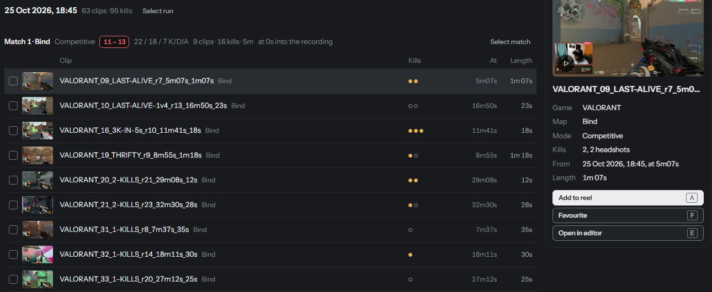

A tall 9:16 reel for Shorts, Reels or TikTok: your kills cut to a song, each one on a beat, with slow-motion, effects, and your camera and the song's words if you want them.
You need: some clips (from the last tutorial, or any you already have), and a song: a file on your PC or a YouTube link.
-
Pick your clips in the Studio
Open Studio. Your clips are in a folder per game, then per evening, then per match, with the map, the score and your kills. Click a clip to watch it. Tick the ones you want, or Select match for a whole match.

Got a clip from somewhere else, saved by the game or sent by a friend? Add your own clip, then press K on each kill as it plays.
-
Press Make a reel and choose a style
Each style shows a preview. The ones marked Use this for best result are the strongest. Not sure? Give it a song and it picks the style for you.

-
Choose the song
Pick a song file, or paste a YouTube link and only the audio is downloaded. Drag along the song to choose the part you want, and press play to hear it.
-
Choose the look
You see the tall frame live, on one of your clips. Zoom in to fill it, or show the whole picture over a blurred copy. Add your camera if your recording has one.
-
Make it
Check the length and the order, then press make. The finished reel is saved in Videos, under
AutoStream. -
Change anything on the timeline
The reel opens on a timeline. Drag a shot to move it, drag its edge to trim it, click it to change its effect. The song is drawn underneath with every kill marked: green on the beat, amber when it is off.

Your change plays straight away. A couple of seconds after your last edit, the video is made again in the background. It waits while you are live, recording or cutting clips.
If something is off
- The reel is shorter than I wanted
- There were not enough kills for the part of the song you picked. Add more clips, or pick a shorter part. The timeline lists every clip that did not make it in, and why.
- The YouTube link did not work
- It says why in plain words: no internet, a private or removed video, an age-restricted one, or a playlist instead of one song.
About songs. The reel uses the song you give it. Whether you may publish that song is between you and whoever owns it.
Technical detailsStyles, beat marks, history, freeing space
The styles
Build and drop, Fast-paced headshot, Montage, Hype and Velocity are marked as giving the best result; Clean, Chaos and Cinematic are there too. Each style's pace, flash rate and opening are the medians of the popular montage edits it is modelled on, not guesses.
Marking the beats yourself
On the Song step, nudge the part's start by a bar, a beat or 10 ms, and press K on every beat a kill should land on. Shot 1's kill then lands on mark 1, shot 2's on mark 2.
The music lane
It is the song's spectrogram, where a kick and a hi-hat look different. The line above it says in words how many kills land on the hit they were cut to. The music and game audio each have a volume line with keyframes, as in any editor.
A slow song intro
Drop a GIF or a video over a long intro and Fill the lead-in trims it to exactly the gap.
History and space
Every render is kept in History; restore an older one or save it as its own reel. To free space, select clips and press Delete: it says how much that frees and which reels use them first. Deleting a reel never deletes the clips it was cut from.